История развития геометрии

Содержание:
Предмет геометрии:
Слово «геометрия» происходит от греческих слов
Многочисленные памятники письменности свидетельствуют о том, что уже около 4000 лет назад египтяне имели значительный запас геометрических сведений, первоначально представлявших собой набор правил, позволяющих измерять площади земельных участков, вычислять объемы сосудов, решать задачи, возникающие в процессе строительных работ. Сохранившиеся до наших времен и поражающие своим величием храмы и гробницы египетских фараонов (рис. 1) служат убедительным подтверждением высокого уровня геометрических знаний древних египтян.
Развитие мореплавания и торговли привело к тому, что накопленные египтянами сведения о свойствах фигур стати в начале VI в. до н. э. достоянием ученых Древней Греции. Одним из тех, кто внес огромный вклад в формирование геометрической науки, был древнегреческий философ Фалес (ок. 625—547 до н. э.).
| 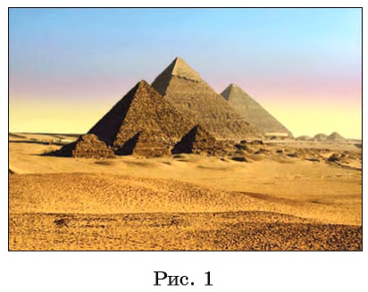 | 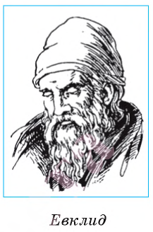 |
Его многочисленные путешествия способствовали освоению знаний, которыми владели цивилизации Древнего Вавилона и Египта. Если в Древнем Египте геометрия носила прикладной характер, то благодаря ученым Древней Греции она постепенно становилась математической теорией, способствующей открытию новых геометрических фактов.
Дальнейшее развитие науки подтвердило догадку о том, что многие принципы, на которых базируется мироздание, выражаются языком математики и что геометрия является ее важной частью, служит ключом к открытию различных законов природы.
Особую роль в развитии геометрии как науки сыграл древнегреческий ученый Евклид, который жил в Александрии в III в. до н. э. Его величайшая заслуга состояла в систематизации накопленного к тому времени богатейшего геометрического материала и придании изложению геометрии довольно совершенной логической формы. Основываясь на воззрениях древнегреческого ученого Аристотеля (ок. 384—322 до н. э.), Евклид осуществил достаточно логически строгое построение геометрии. Итогом геометрических исследований, проведенных ученым, стал научный труд, состоящий из 15 книг, под общим названием «Начала», который, по мнению физика XX в. А. Эйнштейна (1879— 1955), дал человечеству «уверенность для всей его последующей деятельности».
Треугольник, квадрат, круг (рис. 2, а), пирамида, куб, шар (рис. 2, б) — все это примеры знакомых вам геометрических фигур. Они далеко не исчерпывают того многообразия геометрических фигур, которые служат предметом изучения геометрии. Курс геометрии включает в себя два раздела: планиметрию (лат. planum — плоскость и греч. metreo — измеряю) и стереометрию (греч. stereos — пространственный и греч. metreo — измеряю).
В планиметрии в основном изучаются свойства плоских фигур, т. е. фигур, все точки которых лежат в одной плоскости (см. рис. 2, а).
Предметом изучения стереометрии являются не только плоские фигуры, расположенные в пространстве, но также пространственные фигуры, т. е. такие фигуры, не все точки которых лежат в одной плоскости (см. рис. 2, б). Пространственные фигуры могут иметь и более сложную форму. Примерами служат фигуры, изображенные на рисунке 2, в.
| Зарождение геометрии в истории общества относится к глубокой древности и обусловлено не только необходимостью решения различных практических задач, возникавших в процессе строительства жилищ и храмов, но и постоянным стремлением человека к познанию гармонии и красоты мира. Владение геометрическими знаниями имело исключительное значение на всех этапах его деятельности, было одним из факторов, способствующих успешному развитию цивилизации. |
Поэтому не удивительно, что истоки геометрии находятся в глубинах веков, а первые геометрические понятия и сведения восходят к доисторическим временам. Сама природа являлась источником геометрических форм, и активное познание ее способствовало формированию представлений о свойствах геометрических фигур, накоплению и систематизации геометрических знаний.
Первенство в исследовании свойств геометрических фигур и становлении науки геометрии принадлежит мыслителям Древней Греции, которые изучили знания цивилизаций Вавилона и Египта, систематизировали известные к тому времени геометрические сведения и подвергли их логическому анализу. Отличительная особенность древнегреческой науки состояла в том, что она не только привела в систему геометрические факты, но и, что особенно важно, поставила вопрос об осмыслении и формировании логической строгости геометрических понятий и выводов, о возможности и необходимости применения геометрии для объяснения явлений природы.
Научная деятельность мыслителей Древней Греции способствовала превращению геометрии в математическую теорию. Их исследования стали подведением итогов достижений в области геометрических знаний многих ученых древности, величайшим представителем которых был математик и философ Пифагор (ок. 580—500 до н. э.).
Возникновение геометрии
Геометрия возникла в глубокой древности и считается одной из первых наук. Появление геометрических знаний связано с практической деятельностью людей. В переводе с древнегреческого «геометрия» означает «землемерие». Некоторые геометрические факты встречаются уже в вавилонских клинописных табличках и египетских папирусах (3-е тысячелетие до н. э.). Древние греки уделяли большое внимание изучению геометрии. Имена таких ученых как Евклид, Архимед, Пифагор навсегда вошли в историю человеческой мысли. На академии древнегреческого философа Платона была выбита надпись «Да не войдет сюда тот, кто не знает геометрии». Образованный человек обязан был знать геометрию.
На обложке учебного пособия использован фрагмент картины великого итальянского художника эпохи Возрождения Рафаэля Санти «Афинская школа» (академия Платона), где изображены Евклид и его ученики, решающие геометрическую задачу.
Сегодня, как и во времена Евклида, геометрия — востребованная наука. В университетах всего мира изучают начертательную, аналитическую и компьютерную геометрию. Геометрия широко используется в инженерном деле, архитектуре, живописи, на производстве и в практической деятельности человека.
Изучение геометрии развивает умение человека рассуждать логически, обосновывать свою точку зрения.
А теперь о том, что изучает геометрия. Мир вокруг нас состоит из предметов, которые характеризуются некоторыми свойствами: цветом, плотностью, составом вещества и т. д. Из всех свойств математиков интересует только форма, размеры и расположение предметов относительно друг друга. Поэтому предметы в геометрии называются фигурами, а сама геометрия занимается изучением свойств этих фигур.
Геометрические фигуры — это идеализированные модели окружающих предметов. На рисунке вы видите здание Национальной библиотеки, его геометрическую модель, а дальше — развертку поверхности этой фигуры, состоящую из треугольников и квадратов.
Геометрические фигуры могут быть плоскими и характеризоваться, например, шириной и длиной, как прямоугольник. А могут быть пространственными и характеризоваться еще и высотой, как параллелепипед. Часть пространства, ограниченную со всех сторон, называют геометрическим телом.
Геометрические тела имеют поверхность — это граница (оболочка) тела. Так, поверхность куба состоит из шести квадратов, поверхностью шара является сфера. Некоторые поверхности являются плоскими, как оконное стекло, другие — искривленными, как поверхность чашки. При пересечении двух поверхностей образуются линии. Вы видите эти линии на ребрах куба и пирамиды.
Если шар пересечь плоскостью, то на его поверхности получим замкнутую кривую линию — окружность.
На глобусе — это, например, линия экватора. При пересечении двух линий получаются точки.
У куба или пирамиды — это вершины, в которой сходятся ребра.
Геометрические фигуры такие, как точка, прямая и плоскость — это воображаемые, или так называемые, абстрактные понятия. Реальная точка, отмеченная на бумаге, всегда имеет размеры, пусть и малые. А вот математическая точка размеров не имеет, это воображаемая точка. Математическая прямая не имеет толщины и бесконечна в обе стороны. Плоскость также не имеет толщины и бесконечна во все стороны. Прямая линия получается при пересечении двух плоскостей. Прямую нельзя изобразить на листе бумаги полностью, а только некоторую ее часть в виде отрезка.
Считается, что прямая, плоскость, любая линия, поверхность, геометрическое тело состоят из точек. И вообще, всякую геометрическую фигуру мы представляем себе составленной из точек.
Если на прямой отметить точку, то она разобьет прямую на две полупрямые (на два луча).
Если на плоскости провести прямую, то она разобьет плоскость на две полуплоскости.
Плоскость разбивает пространство на два полупространства.
Для исследования реальных объектов рассматривают их математические модели. Так, моделью столба может быть отрезок. Моделью бочки может быть цилиндр, а моделью земного шара — геометрический шар.
Основные фигуры
Основные геометрические фигуры — точка, прямая и плоскость. Это абстрактные математические понятия, которые принимаются без определения. Точка обозначается большой буквой, прямая — двумя большими или одной малой буквой латинского алфавита. Плоскость обозначается тремя большими буквами латинского или одной малой буквой греческого алфавита.
На рисунке 14 изображены точки А, В, С и М, прямые ВС и
 ,
плоскость
,
плоскость
 (альфа). Точка А и прямая ВС принадлежат плоскости
,
точка М принадлежит прямой
(альфа). Точка А и прямая ВС принадлежат плоскости
,
точка М принадлежит прямой
Школьный курс геометрии делится на планиметрию и стереометрию. Рис. 14
Планиметрия и стереометрия
В планиметрии изучаются свойства плоских геометрических фигур, то есть тех, которые всеми своими точками могут быть расположены в одной плоскости. Это треугольник, квадрат, окружность и другие фигуры (рис. 15).
В стереометрии рассматриваются свойства пространственных геометрических фигур, которые не могут целиком располагаться в одной плоскости (рис. 16). Таких, например, как куб, прямоугольный параллелепипед, пирамида, шар.
В стереометрии также рассматриваются свойства точек, прямых и плоскостей в пространстве. Например, две прямые на плоскости либо пересекаются, либо не пересекаются, т. е. параллельны. В пространстве же существует еще один случай взаимного расположения двух прямых — это скрещивающиеся прямые. Они и не параллельны, и не пересекаются.
На рисунке 17 изображены прямые которые проходят через ребра куба. Прямые параллельны. Прямые пересекаются. Прямые скрещиваются.
Геометрические фигуры называются равными, если их можно совместить наложением. Так как фигуры А и Б, изображенные на рисунке 18, совместились всеми своими точками, то это равные фигуры. Если сказано, что фигуры равны, то их можно полностью совместить друг с другом.
Иногда для совмещения равных фигур, расположенных на плоскости, одну из них приходится перевернуть. Например, как фигуру С на рисунке 19 для совмещения с равными ей фигурами А и Б.
Определения, аксиомы, теоремы
Все геометрические фигуры, кроме точки, прямой и плоскости, имеют определения. В определении указываются отличительные характеристики данной фигуры или взаимного расположения фигур. Определение обычно содержит либо слово называется, либо слово это. Например:
Определение. Отрезком называется часть прямой, ограниченная двумя точками.
Определение. Равносторонний треугольник — это треугольник, у которого все стороны равны.
Свойства фигур формулируются в виде аксиом и теорем.
Аксиомами называются утверждения об основных свойствах простейших фигур, не вызывающие сомнений.
Теоремами называются верные утверждения, справедливость которых устанавливается путем логических рассуждений, которые называются доказательством. Доказательство каждой теоремы опирается на аксиомы и ранее доказанные теоремы. Например:
Аксиома. Через любые две точки плоскости можно провести прямую, и притом только одну (рис. 20).
Теорема. На плоскости две прямые, перпендикулярные третьей прямой, параллельны между собой (рис. 21).
Аксиома — это утверждение, которое принимается без доказательства.
Теорема — это утверждение, которое требует доказательства.
Кроме определений, аксиом и теорем, в геометрии есть задачи. Выделяют три основных типа задач: а) задачи на доказательство; б) задачи на вычисление; в) задачи на построение.
Задачи на доказательство похожи на теоремы. Теоремы описывают наиболее часто встречающиеся свойства фигур.
В задачах на вычисление нужно по некоторым известным числовым данным найти длину отрезка, величину угла, периметр, площадь фигуры, объем геометрического тела и т. д.
В задачах на построение необходимо найти способ построения какой-либо геометрической фигуры при помощи указанных чертежных инструментов.
Итак, геометрия изучает свойства фигур на плоскости и в пространстве. Свойства фигур выражены в виде аксиом и теорем. При решении задач ссылаются на определения, аксиомы и теоремы.
Такую геометрию создали древнегреческие ученые Фалёс, Архимед, Пифагор и др. Первым, кто систематизировал все математические знания того времени и изложил в большом научном труде под названием «Начала», был Евклид (III в. до н. э.). В течение длительного времени геометрию изучали по «Началам» Евклида.
Геометрия 3D
Геометрическое тело, поверхность которого состоит из конечного числа многоугольников, называется многогранником.
Многогранником является прямоугольный параллелепипед, все шесть его граней — прямоугольники (рис. 46). Длины трех его ребер, имеющих общую вершину, называются измерениями прямоугольного параллелепипеда. Это его длина, ширина и высота. Например, AD=, DC=, DD1= — измерения параллелепипеда. Объем прямоугольного параллелепипеда находится по формуле
Всё про геометрию
Хотя геометрия — это новый школьный предмет, однако на уроках математики вы уже знакомились с азами этой мудрой науки. Так, все геометрические фигуры, изображенные на рисунке 5, вам хорошо известны.
Вы умеете с помощью линейки соединять две точки отрезком (рис. 6), с помощью циркуля строить окружность (рис. 7),
с помощью линейки и угольника строить перпендикулярные и параллельные прямые (рис. 8),
измерять длину отрезка и строить отрезок заданной длины с помощью линейки с миллиметровыми делениями (рис. 9),
находить величину угла и строить угол заданной величины с помощью транспортира (рис. 10), классифицировать треугольники (см. форзац).
Однако знать, как «выглядит» фигура, или уметь выполнять простейшие построения — это всего лишь самые начальные знания науки о свойствах геометрических фигур, т. е. геометрии.
При изучении систематического курса геометрии вы будете постепенно в определенной последовательности изучать свойства геометрических фигур, а следовательно, и сами фигуры, как знакомые, так и новые. Это означает, что вы должны научиться по одним свойствам фигуры находить, а главное, доказывать другие ее свойства.
Школьный курс геометрии традиционно делится на планиметрию и стереометрию. Планиметрия изучает фигуры на плоскости («планум» в переводе с латинского — «плоскость»), В стереометрии изучают фигуры в пространстве («стереос» в переводе с греческого — «пространственный»). Итак, мы приступаем к изучению планиметрии.
Геометрические фигуры и их свойства
В этом параграфе рассматриваются знакомые вам из предыдущих классов геометрические фигуры: точки, прямые, отрезки, лучи и углы. Вы узнаете больше о свойствах этих фигур. Некоторые из этих свойств научитесь доказывать. Слова определение, теорема, аксиома станут для вас привычными, понятными и часто употребляемыми.
Точки и прямые
Точка — самая простая геометрическая фигура. Это единственная фигура,
которую нельзя разбить на части. Например, каждая из фигур,
изображенных на рисунке 11, разбита на части. И даже о фигуре,
изображенной на рисунке 12, состоящей из двух точек, можно сказать,
что она состоит из двух частей: точки
 и точки
и точки  .
.
На рисунке 13 изображены прямая
 и две точки
и
и две точки
и  .
Говорят, что точка
.
Говорят, что точка  принадлежит прямой
, или точка
лежит на прямой
принадлежит прямой
, или точка
лежит на прямой  ,
или прямая
проходит через точку
,
или прямая
проходит через точку  и соответственно точка
и соответственно точка  не принадлежит прямой ,
или точка
не лежит на прямой ,
или прямая а не проходит через точку
.
Прямая — это геометрическая фигура, обладающая определенными свойствами.
Основное свойство прямой. Через любые две точки1 можно провести прямую, и притом только одну.
не принадлежит прямой ,
или точка
не лежит на прямой ,
или прямая а не проходит через точку
.
Прямая — это геометрическая фигура, обладающая определенными свойствами.
Основное свойство прямой. Через любые две точки1 можно провести прямую, и притом только одну.
1 Здесь и в дальнейшем, говоря «две точки», «три точки», «две прямые» и т. д., будем иметь в виду, что это разные точки и разные прямые. Случай их совпадения будем оговаривать особо.
Почему это свойство прямой — основное? Через точки А и В можно провести много различных линий (рис. 14). Прямая же задается этими точками однозначно. В этом и состоит суть основного свойства прямой.
Это свойство позволяет обозначать прямую, называя две любые ее точки. Так, прямую, проведенную через точки и , называют «прямая » (или «прямая »).
Если хотят разъяснить смысл какого-либо слова (термина), то используют определения.
Например:
- часами называют прибор для измерения времени;
- геометрия — это раздел математики, изучающий свойства фигур.
Определения есть и в геометрии.
Определение. Две прямые, имеющие общую точку, называют пересекающимися. На рисунке 15 изображены прямые и , пересекающиеся в точке .
Часто справедливость (истинность) какого-либо факта приходится устанавливать с помощью логических рассуждений.
Рассмотрим такую задачу. Известно, что все жители Геометрической улицы — математики. Женя живет по адресу ул. Геометрическая, 5. Является ли Женя математиком?
Из условия задачи следует, что Женя живет на Геометрической улице. А поскольку все жители этой улицы математики, то Женя — математик. Приведенные логические рассуждения называют доказательством того факта, что Женя — математик.
В математике утверждение, истинность которого устанавливается с помощью доказательства, называют теоремой.
Теорема 1.1. Любые две пересекающиеся прямые имеют только одну общую точку.
Доказательство: Пусть пересекающиеся прямые
и
помимо общей точки  имеют еще одну общую точку
имеют еще одну общую точку  (рис. 16).
(рис. 16).
Тогда через две точки
и проходят две прямые.
А это противоречит основному свойству прямой. Следовательно, наше предположение о существовании второй
точки пересечения прямых
и неверно.
Отрезок и его длина
На рисунке 20 изображена прямая , проходящая через точки и . Эти точки ограничивают часть прямой , выделенную красным цветом. Такую часть прямой вместе с точками и называют отрезком, а точки и — концами этого отрезка.
Понятно, что для любых двух точек и существует единственный отрезок, для которого эти точки являются концами (рис. 21), то есть отрезок своими концами задается однозначно. Поэтому отрезок на рисунке 21 обозначают так: или (читают: «отрезок » или «отрезок »).
На рисунке 22 изображены отрезок
и точка ,
принадлежащая этому отрезку, но не совпадающая ни с одним из его концов.
Точку  называют внутренней точкой отрезка
.
В этом случае также говорят, что точка
лежит между
точками
и .
называют внутренней точкой отрезка
.
В этом случае также говорят, что точка
лежит между
точками
и .
Таким образом, отрезок состоит из точек и , а также всех точек прямой , лежащих между точками и . Определение. Два отрезка называют равными, если их можно совместить наложением.
На рисунке 23 изображены равные отрезки и . Пишут: 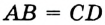. Вы знаете, что каждый отрезок имеет определенную длину, и для ее измерения надо выбрать единичный отрезок. В качестве единичного можно выбрать любой отрезок.
Например, будем считать отрезок
на рисунке 24 единичным. Этот факт записывают так:
 .
Тогда длину отрезка
считают равной 3 единицам длины и записывают
.
или просто
и говорят: «отрезок
равен 3». Для отрезка
имеем:.
.
Тогда длину отрезка
считают равной 3 единицам длины и записывают
.
или просто
и говорят: «отрезок
равен 3». Для отрезка
имеем:.
На практике чаще всего используют такие единичные отрезки: 1 мм, 1 см, 1 дм, 1 м, 1 км.
В зависимости от выбора единицы длины меняется численное значение длины отрезка. Например, на рисунке 25 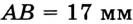, или , или дм и т. д.
На производстве и в быту используют различные приборы для измерения длины отрезка: линейку с делениями (а), рулетку (0), штангенциркуль (в), микрометр (г), полевой циркуль (д) (рис. 26).
Ясно, что равные отрезки имеют равные длины и наоборот, если длины отрезков равны, то равны и сами отрезки.
Если длина отрезка больше длины отрезка , как, например, на рисунке 24, то будем говорить, что отрезок больше отрезка , и записывать .
В дальнейшем, говоря «сумма отрезков», будем подразумевать сумму длин этих отрезков.
Основное свойство длины о т ре з к а. Если точка является внутренней точкой отрезка , то отрезок равен сумме отрезков и , т. е.
Если точка не принадлежит отрезку . то
Рисунок 27 иллюстрирует это свойство, суть которого состоит в том, что кратчайший путь из точки в точку проходит по отрезку . Поэтому естественно принять следующее
Определение. Расстоянием между точками А и В называют длину отрезка АВ.
Если точки
и  совпадают, то расстояние между ними считают равным нулю.
совпадают, то расстояние между ними считают равным нулю.
Теорема 2.1. Если три точки
и
таковы, что выполняется равенство ,
то точка
является внутренней точкой отрезка  .
.
Доказательство: Пусть точка
не является внутренней точкой отрезка .
В силу договоренности, принятой в п. 1 (см. сноску на с. 12), точки
и
различны, т. е.
точка  не совпадает ни с одним из концов отрезка
.
Значит, точка
не принадлежит отрезку .
Тогда из основного свойства длины отрезка следует неравенство
,
которое противоречит условию. Следовательно, предположение о том, что точка
не является внутренней точкой отрезка
, неверно.
не совпадает ни с одним из концов отрезка
.
Значит, точка
не принадлежит отрезку .
Тогда из основного свойства длины отрезка следует неравенство
,
которое противоречит условию. Следовательно, предположение о том, что точка
не является внутренней точкой отрезка
, неверно.
Определение. Серединой отрезка называют такую его точку , что 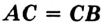.
На рисунке 28 точка — середина отрезка .
Пример:
Точки
и  принадлежат одной прямой, ,
отрезок
на 2 см длиннее отрезка .
Найдите отрезки
и .
принадлежат одной прямой, ,
отрезок
на 2 см длиннее отрезка .
Найдите отрезки
и .
1 Здесь и далее вместо «Найдите длину отрезка...» будем говорить просто «Найдите отрезок...».
Решение:
В условии не указано, каково взаимное расположение данных точек на прямой.
Поэтому рассмотрим три возможных случая. 1) Точка
—
внутренняя точка отрезка  (рис. 29). Тогда отрезок
Рис. 29 длиннее отрезка
на длину отрезка ,
то есть на 8 см. Это противоречит условию. Значит, такой случай невозможен.
(рис. 29). Тогда отрезок
Рис. 29 длиннее отрезка
на длину отрезка ,
то есть на 8 см. Это противоречит условию. Значит, такой случай невозможен.
2) Точка — внутренняя точка отрезка (рис. 30). В этом случае . Пусть , тогда 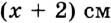. Имеем:
Следовательно, .
3) Точка — внутренняя точка отрезка (рис. 31). В этом случае и тогда . Это противоречит условию. Значит, такой случай невозможен.
Ответ: .
Луч. Угол. Измерение углов
Проведем прямую
и отметим на ней произвольную точку
.
Эта точка разбивает прямую на две части, выделенные на рисунке 44 разными цветами.
Каждую из этих частей вместе с точкой  называют лучом или полупрямой.
Точку
называют лучом или полупрямой.
Точку  называют началом луча.
называют началом луча.
Каждый из лучей, изображенных на рисунке 44, состоит из точки
 и всех точек прямой ,
лежащих по одну сторону от точки
.
и всех точек прямой ,
лежащих по одну сторону от точки
.
Это позволяет обозначать луч, называя две его точки: первой обязательно указывают
начало луча, второй — любую другую точку, принадлежащую лучу. Так, луч с началом в точке
(рис. 45) можно обозначить
или .
Лучи
и (рис. 44)
дополняют друг друга до прямой. Также можно сказать, что объединением этих лучей является прямая.
Определение. Два луча, имеющие общее начало и лежащие на одной прямой, называют дополнительными.
Например, лучи
и —
дополнительные (рис. 46). Заметим, что, объединив лучи
и  ,
мы тоже получим прямую .
Однако эти лучи не считают дополнительными: у них нет общего начала.
,
мы тоже получим прямую .
Однако эти лучи не считают дополнительными: у них нет общего начала.
На рисунке 47, а изображена фигура, состоящая из двух лучей и , имеющих общее начало. Эта фигура делит плоскость на две части, выделенные разными цветами. Каждую из этих АВС частей вместе с лучами и называют углом.
Лучи и называют сторонами угла, а точку — вершиной угла. Как видим, углы на рисунке 47, а внешне существенно различаются. Это различие определено следующим свойством. На лучах и выберем произвольно точки 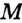 и (рис. 47, б). Отрезок принадлежит «зеленому» углу, а «синему» углу принадлежат лишь концы отрезка.
В дальнейшем, говоря «угол», будем подразумевать лишь тот из них, который содержит любой отрезок с концами на его сторонах. Случаи, в которых придется рассматривать углы, не обладающие этим свойством, будут специально оговариваться.
Есть несколько способов обозначения углов. Угол на рисунке 48 можно обозначить так: , или , или просто . На рисунке 49 изображено несколько углов, имеющих общую вершину. Здесь обозначение угла одной буквой может привести к путанице. В таких случаях углы удобно обозначать с помощью цифр: (читают соответственно: «угол один», «угол два», «угол три»).
Определение. Угол, стороны которого являются дополнительными лучами, называют развернутым (рис. 50).
Любая прямая делит плоскость на две полуплоскости, для которых эта прямая является границей (рис. 51). Считают, что прямая принадлежит каждой из двух полуплоскостей, для которых она является границей. А так как стороны развернутого угла образуют прямую, то можно также рИс. 51 сказать, что развернутый угол — это полуплоскость, на границе которой отмечена точка — вершина угла.
Определение. Два угла называют равными, если их можно совместить наложением.
На рисунке 52 изображены равные углы
и  .
Пишут: .
.
Пишут: .
Понятно, что все развернутые углы равны.
На рисунке 53 изображены угол
и луч ,
принадлежащий этому углу, но отличный от его сторон. Будем говорить, что луч
 проходит между сторонами угла
и делит его на два угла
и 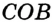.
проходит между сторонами угла
и делит его на два угла
и 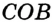.
Определение. Биссектрисой угла называют луч с началом в его вершине, делящий этот угол на два равных угла.
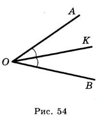
На рисунке 54 луч — биссектриса угла . Значит, . Вы знаете, что каждый угол имеет величину и для ее измерения нужно выбрать единицу измерения — единичный угол. Выбрать его можно, например, так. Разделим развернутый угол на 180 равных углов (рис. 55).

Угол, образованный двумя соседними лучами, принимают за единичный и называют градусом. Записывают: 1°.
Например, градусная мера (величина) угла
(рис. 56) равна 20° (этот факт легко установить с помощью транспортира).
В таком случае говорят: «угол
 равен 20°» и записывают: .
равен 20°» и записывают: .
Очевидно, что градусная мера развернутого угла равна 180°, или коротко: развернутый угол равен 180°.
На практике, помимо транспортира, используют и другие приборы специального назначения: астролябию (рис. 57), теодолит (рис. 58) — для измерения на местности; буссоль (рис. 59) — в артиллерии, секстант (рис. 60) — в морском деле.
Для более точных результатов измерения углов используют части градуса. градуса равна одной минуте (1'), т. е. . минуты называют секундой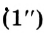, т. е. . 60
Например, запись означает, что градусная мера угла составляет 23 градуса 15 минут 11 секунд.
Существуют и другие единицы измерения углов, например, моряки используют единицу 1 румб .
Определение. Угол, градусная мера которого равна 90°, называют прямым. Угол, градусная мера которого меньше 90°, называют острым. Угол, градусная мера которого больше 90°, но меньше 180°, называют тупым.
На рисунке 61 изображены углы каждого из трех видов.
Очевидно, что равные углы имеют равные величины, и наоборот, если величины углов равны, то равны и сами углы.
Если величина угла  больше величины угла ,
то говорят, что «угол
больше угла »,
и записывают .
В дальнейшем, говоря «сумма углов», будем подразумевать сумму величин этих углов.
больше величины угла ,
то говорят, что «угол
больше угла »,
и записывают .
В дальнейшем, говоря «сумма углов», будем подразумевать сумму величин этих углов.
Основное свойство величины угла. Если луч делит угол на два угла и , то (рис. 62).
В этом пункте вы познакомились с некоторыми приборами для измерения углов.
На рисунке 63 изображен старинный угломерный прибор астролябия (в переводе с греческого — «схватывающая звезды»). Многие столетия именно такой прибор помогал мореплавателям находить верный путь, а астрономам — определять положение звезд.

Пример:
На рисунке 64
 .
Найдите угол
.
Найдите угол  .
.
1 Здесь и далее вместо «Найдите градусную меру угла...» будем говорить просто «Найдите угол...».
Решение:
Ответ: 31°.
Смежные и вертикальные углы
Определение. Два угла называют смежными, если у них одна сторона общая, а две другие являются дополнительными лучами.
На рисунке 79 углы и — смежные.
Теорема 4.1. Сумма смежных углов равна 180°.
Доказательство: Пусть углы и — смежные (рис. 80). Надо доказать, что .
Так как углы
и
смежные, то лучи
и
являются дополнительными. Тогда
— развернутый. Следовательно,
.
Луч
принадлежит углу .
По основному свойству величины угла имеем:
 .
.
Определение. Два угла называют вертикальны-м и, если стороны одного угла являются дополнительными лучами сторон другого . На рисунке 81 углы и — вертикальные.

Очевидно, что при пересечении двух прямых образуются две пары вертикальных углов. На рисунке 81 углы и — также вертикальные.
Теорема 4.2. Вертикальные углы равны.
Доказательство: На рисунке 82 углы 1 и 2 — вертикальные. Надо доказать, что .
Каждый из углов 1 и 2 смежный с углом 3. Тогда
 и
.
Отсюда
и .
Градусные меры углов 1 и 2 равны, а значит, равны и сами углы.
и
.
Отсюда
и .
Градусные меры углов 1 и 2 равны, а значит, равны и сами углы.
Пример:
На рисунке 83 . Докажите, что .
Решение:
, так как и — смежные; по условию; углы и 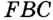 равны как вертикальные. Следовательно, , и тогда .
Перпендикулярные прямые
При пересечении двух прямых и образовалось 4 угла (рис. 93). Легко показать (сделайте это самостоятельно), что если один из углов прямой (например, угол 1), то и углы 2, 3 и 4 также прямые.
Определение. Две прямые называют перпендикулярными, если при пересечении они образуют прямые углы.
На рисунке 93 прямые и
— перпендикулярные. Пишут:
или  .
.
На рисунке 94 прямые и не перпендикулярны. Они при пересечении образовали пару равных острых углов и пару равных тупых углов. Величину острого угла называют углом между прямыми и .
Если прямые перпендикулярны, то считают, что угол между ними равен 90°. Определение. Два отрезка называют перпендикулярными, если они лежат на перпендикулярных прямых.
На рисунке 95 отрезки
и  —перпендикулярные.
Пишут: .
—перпендикулярные.
Пишут: .
Также можно говорить о перпендикулярности двух лучей, луча и отрезка, прямой и луча, отрезка и прямой. Например, на рисунке 96 изображены перпендикулярные отрезок и луч .
На рисунке 97 изображена прямая и перпендикулярный ей отрезок , конец которого принадлежит прямой . В таком случае говорят, что из точки на прямую опустили перпендикуляр . Точку называют основанием перпендикуляра .
Длину перпендикуляра называют расстоянием от точки до прямой . Если точка принадлежит прямой , то естественно считать, что расстояние от точки до прямой равно нулю.
На рисунке 98 изображен перпендикуляр , опущенный из точки на прямую . Точка , его основание, принадлежит отрезку (лучу ). В таких случаях длину этого перпендикуляра также называют расстоянием от точки до отрезка (луча )'.
Если точка принадлежит отрезку (лучу), то естественно считать, что расстояние от этой точки до отрезка (луча) равно нулю.
Опустим из точки на прямую перпендикуляр (рис. 99). Пусть — произвольная точка прямой , отличная от точки 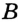. Отрезок называют наклонной, проведенной из точки к прямой .
Теорема 5.1. Через каждую точку прямой проходит только одна прямая, перпендикулярная данной.
Доказательство: Отметим на прямой произвольную точку и построим прямой угол м (рис. 100). Тогда .
Предположим, что через точку проходит еще одна прямая , отличная от и перпендикулярная прямой .
Рассмотрим случай, когда луч принадлежит углу 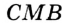. Тогда по основному свойству величины угла 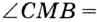 . Отсюда 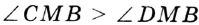. Однако . Следовательно, наше предположение неверно.
Аналогично рассматривают случай, когда луч принадлежит углу .
Вы умеете через произвольную точку ,
не принадлежащую прямой ,
проводить прямую ,
перпендикулярную прямой
(рис. 101). То, что прямая  единственна, докажем в п. 7.
единственна, докажем в п. 7.
Аксиомы
В предыдущих пунктах были доказаны пять теорем. Каждый раз, доказывая новое свойство фигуры, мы опирались на ранее известные геометрические факты. Например, при доказательстве теоремы о вертикальных углах было использовано свойство смежных углов. Руководствуясь этим принципом, мы докажем еще много новых теорем. Но уже сейчас, на начальном этапе изучения геометрии, возникает естественный вопрос: если свойства геометрических фигур изучают по принципу «новое из старого», то должны существовать первоначальные факты, и тогда на чем основано их доказательство? Ведь до них никаких истинных утверждений нет.
Решить эту проблему можно единственным способом: принять первые свойства без доказательств. Так и поступают математики. Эти свойства называют аксиомами.
В качестве аксиом выбирают утверждения, которые просты, очевидны, не вызывают сомнений. Ведь недаром слово «аксиома», происходящее от греческого «аксиос», означает «достойное признания».
Некоторые аксиомы были сформулированы в предыдущих пунктах. Они назывались основными свойствами и были напечатаны синим цветом. Часть аксиом мы не выделяли каким-то специальным образом, а просто формулировали как наглядно очевидные утверждения. Так, в п. 2 были сформулированы такие аксиомы:
- для любых двух точек М и W существует единственный отрезок, для которого эти точки являются концами, и каждый отрезок имеет определенную длину.
Мы опирались и на некоторые другие истинные утверждения, принятые без доказательства, т. е. по сути аксиомы, но не сформулированные в явном виде. Например, описывая рисунок 13, мы фактически использовали такую аксиому:
- какова бы ни была прямая, существуют точки, принадлежащие этой прямой, и точки, не принадлежащие ей.
Аксиомы используют не только в математике. Нередко в обыденной жизни любое истинное утверждение называют аксиомой. Например, говорят: «После марта наступит апрель. Это аксиома».
Аксиомы возникают не только из практики или наблюдений. Для любого гражданина Украины Конституция — это список аксиом. Поэтому аксиому можно рассматривать как закон или правило. Но законы (правила игры) принимают, т. е. они возникают в результате договоренности людей между собой. Следовательно, и аксиомы геометрии можно рассматривать как утвержденные правила, на основании которых геометры, как каменщики, строят здание науки (рис. 108).
Тогда у вас может возникнуть вопрос: «Неужели на геометрию можно смотреть как на игру, например такую, как шахматы?» В какой-то степени. — да. Но при этом надо четко понимать, что шахматные правила, а значит и сама игра, возникли благодаря человеческой фантазии. Вместе с тем геометрические правила (аксиомы) возникли из практики и наблюдений. Поэтому геометрия, в отличие от шахмат, используется очень широко.
Если вы изберете профессию математика, то сможете познакомиться с совершенно иными геометриями, отличающимися от изучаемой в школе тем, что они строятся на аксиомах-фантазиях.
Из истории геометрии:
Когда и где возникли первые геометрические сведения? Специалисты на этот вопрос не отвечают однозначно. Одни считают, что первооткрывателями были египетские и вавилонские землемеры, жившие за 4000 лет до н. э., другие полагают, что геометрия зародилась в Древнем Египте 5000 лет назад. Может показаться странным, но вопрос, когда возникла наука геометрия, не вызывает споров. Историки отвечают не с точностью до тысячелетий, а едины во мнении, указывая VI в. до н. э. Такое единодушие, на первый взгляд, может удивить: ведь до VI в. до н. э. народы Древнего мира накопили огромный объем геометрических знаний.
Например, совершенно очевидно, что без геометрического опыта египтяне не подарили бы миру одно из «семи чудес» — пирамиды. И все-таки, почему обилие геометрических фактов неравносильно существованию геометрической науки?
Геометрия стала называться наукой лишь тогда, когда ее истины начали устанавливать путем доказательства.
Появление «доказательной геометрии» связано с именем первого из «семи мудрецов» — Фалеса Милетского (ок. 625-547 г. до н. э.) — философа, ученого, купца и государственного деятеля.
Задолго до Фалеса было известно, что вертикальные углы равны, диаметр делит круг на две равные части. Никто в истинности этих фактов не сомневался. А Фалес доказал их, тем самым прославив себя.
В VI-III вв. до н. э., благодаря ученым Древней Греции, таким как Пифагор, Евдокс, Архит, Теэтет, Евклид, Архимед, геометрия из прикладной науки превратилась в математическую теорию.
Книгу, по которой учили геометрию более 2000 лет, без преувеличения можно назвать великой. Ее название «Начала», ее автор Евклид (ок. 365-300 г. до н. э.). К сожалению, о самом Евклиде мало что известно. В таких случаях личность обрастает легендами, одна из которых очень поучительна. Царь Птолемей I спросил Евклида, существует ли более простой путь познания геометрии, чем изложенный в «Началах». Евклид ответил: «В геометрии нет царских дорог». А какой же путь в геометрию избрал Евклид в своих «Началах»?
Аксиоматический. В фундаменте науки — список простейших фактов. Их называют постулатами 1 и аксиомами. Затем на их основе путем логических рассуждений доказывают все другие свойства — теоремы.Постулатов у Евклида пять. Приведем первые четыре.
- I постулат. Требуется, чтобы от каждой точки ко всякой другой точке можно было провести прямую линию.
- II постулат. И чтобы каждую прямую можно было неограниченно продолжить.
- III постулат. И чтобы из любого центра можно было описать окружность любого радиуса.
- IV постулат. И чтобы все прямые углы были равны.
По популярности с «Началами» Евклида может сравниться разве что Библия. Так, еще в конце XIX века в ряде европейских стран геометрию преподавали по упрощенным изданиям «Начал».
И сейчас геометрия, которую изучают в школе, во многом следует идеям Евклида.
Справочный материал
Две прямые
Две прямые и могут быть параллельными (рис. 382) или пересекающимися (рис. 383).

Пересекающиеся прямые разделяют плоскость на четыре угла, пары которых имеют специальные названия. Углы 1 и 2, имеющие общую сторону, называют смежными, а углы 1 и 3, стороны каждого из которых являются продолжениями сторон другого угла, — вертикальными. Смежные углы вместе составляют 180°, а вертикальные углы равны друг другу.
Три прямые
Среди трёх прямых может не быть параллельных прямых (рис. 384) или такие прямые могут быть. Если параллельные прямые и есть, то третья прямая может быть параллельной им (рис. 385) или пересекать их (рис. 386).
Если две прямые и пересечены третьей прямой, то образуются 8 углов (рис. 387). Углы 1 и 5, 2 и 6, 3 и 7, 4 и 8 называются соответственными, углы 3 и 5, 4 и 6 — внутренними накрест лежащими, углы 3 и 6, 4 и 5 — внутренними односторонними.
Свойства параллельных прямых: если прямые и 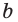 параллельны, то при пересечении их третьей прямой соответственные углы равны, внутренние накрест лежащие углы равны, а внутренние односторонние вместе составляют 180°.
Признаки параллельных прямых: прямые и параллельны, если при пересечении их третьей прямой соответственные углы равны, внутренние накрест лежащие углы равны, а внутренние односторонние вместе составляют 180°.
Три попарно пересекающиеся прямые ограничивают на плоскости треугольник (рис. 388).
Треугольник
Свойства треугольника (рис. 389):
- сумма внутренних углов равна 180°:
- каждая сторона треугольника меньше суммы двух других его сторон и больше их разности:
- большему углу соответствует большая противоположная сторона: если то 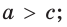
- большей стороне соответствует больший противоположный угол: если то
- теорема косинусов: квадрат стороны равен сумме квадратов двух других сторон без удвоенного произведения этих сторон на косинус угла между ими:
- теорема синусов: стороны пропорциональны синусам противоположных углов;
Кроме сторон и углов, треугольник
Внешний угол треугольника — угол, внутренним углом (рис. 390).
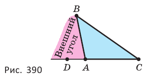
Внешний угол треугольника равен сумме двух его внутренних углов, не смежных с ним:
Средняя линия треугольника — отрезок, соединяющий середины двух его сторон (рис. 391).
Средняя линия треугольника параллельна третьей стороне (основе) и равна её половине:
Медиана треугольника — отрезок, соединяющий вершину треугольника с серединой противоположной стороны (рис. 392).
Медианы треугольника пересекаются в одной точке, которая отсекает от каждой из них третью долю, если считать от стороны (рис. 393):
Биссектриса треугольника — отрезок биссектрисы угла треугольника, заключённый между его вершиной и противоположной стороной (рис. 394).
Биссектриса треугольника делит противоположную сторону на части, пропорциональные прилежащим сторонам:
Биссектрисы треугольника пересекаются в одной точке (рис. 395).
Высота треугольника — перпендикуляр, опущенный из вершины треугольника на прямую, проходящую через противоположную его сторону (рис. 396).
Прямые, проходящие через высоты треугольника, пересекаются в одной точке (рис. 397).
Площадь треугольника равна половине произведения стороны и проведённой к ней высоты, или произведению высоты треугольника и перпендикулярной ей средней линии, или половине произведения двух его сторон и синуса угла между ними, или квадратному корню из произведения полупериметра и трёх разностей полупериметра с каждой стороной, или произведению полупериметра и радиуса вписанной окружности, или произведению трёх сторон треугольника, разделённому на учетверённый радиус описанной окружности (рис. 398):
Прямоугольный треугольник
Два угла треугольника обязательно острые, а третий — больший — его угол может быть и острым (рис. 399), и прямым (рис. 400), и тупым (рис. 401). В соответствии с этим треугольники разделяют на остроугольные, прямоугольные, тупоугольные.
Свойства прямоугольного треугольника (рис. 402).
- острые углы вместе составляют 90°:
- теорема Пифагора: квадрат гипотенузы равен сумме квадратов катетов:
- если катет лежит против угла в 30°, то он равен половине гипотенузы;
- если катет равен половине гипотенузы, то он лежит против угла в 30°;
- медиана, проведенная к гипотенузе, равна половине этой гипотенузы и является радиусом описанной окружности:
- высота прямоугольного треугольника, проведённая к гипотенузе, является средним геометрическим отрезков, на которые она разделяет гипотенузу, а катет является средним геометрическим гипотенузы и проекцией этого катета на гипотенузу:
- синус острого угла равен отношению противоположного катета к гипотенузе; косинус острого угла равен отношению прилежащего катета к гипотенузе; тангенс острого угла равен отношению противолежащего катета к прилежащему; котангенс острого угла равен отношению прилежащего катета к противолежащему:
Признаки прямоугольного треугольника. Треугольник является прямоугольным, если:
- сумма двух каких-нибудь его углов равна 90°;
- квадрат большей его стороны равен сумме квадратов двух других сторон;
- одна из его медиан равна половине стороны, к которой проведена.
Равнобедренный треугольник
Если треугольник имеет две равные стороны, его называют равнобедренным (рис. 403). Равнобедренный треугольник с тремя равными сторонами называют равносторонним (рис. 404).
Свойства равнобедренного треугольника (рис. 405):
- углы при основании равны:
- медиана, биссектриса, высота, проведённые к основанию, совпадают:
- если — медиана, то — биссектриса и высота;
- если
 — биссектриса, то
— биссектриса, то  — медиана и высота;
— медиана и высота; - если
 — высота, то
— высота, то  — биссектриса и медиана.
— биссектриса и медиана.
Признаки равнобедренного треугольника. Треугольник является равнобедренным, если:
- две его стороны равны;
- два его угла равны;
- медиана и высота, или медиана и биссектриса, или высота и биссектриса, проведённые из одной вершины, совпадают.
Равенство фигур
Равные фигуры — фигуры, совпадающие при наложении.
Признаки равенства треугольников. Треугольники являются равными, если они имеют равные:
- угол и прилежащие к нему стороны;
- сторону и прилежащие к ней углы;
- три стороны.
Признаки равенства прямоугольных треугольников. Прямоугольные треугольники являются равными, если у них соответственно равны:
- катеты;
- катет и прилежащий к нему острый угол;
- гипотенуза и острый угол;
- гипотенуза и катет.
Подобие фигур
Теорема Фалеса. Если на одной стороне угла отложить равные отрезки и через их концы провести параллельные прямые, пересекающие другую сторону угла, то эти прямые на другой стороне высекают также равные отрезки.
Подобные треугольники — треугольники, углы которых попарно равны, а соответственные стороны пропорциональны.
Признаки подобия треугольников. Треугольники являются подобными, если у них:
- имеется по равному углу, а прилежащие к нему стороны пропорциональны;
- имеется по два равных угла;
- все три стороны пропорциональны.
Отношение любых соответственных линейных элементов подобных треугольников равно коэффициенту подобия. Отношение периметров подобных многоугольников равно коэффициенту подобия. Отношение площадей подобных многоугольников равно квадрату коэффициента подобия. Отношение объёмов подобных фигур-тел равно кубу коэффициента подобия.
Окружность и круг
Отношение длины
окружности к её диаметру
является одним и тем же для любой окружности (рис. 406). Это отношение выражает число, которое обозначается

Длина окружности, площадь соответствующего круга и их радиус связаны формулами:
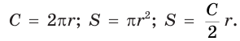
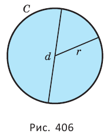
Окружность и угол
Угол, вершина которого находится в центре круга, называется центральным углом.
Угол, вершина которого принадлежит окружности, а стороны имеют с окружностью общие точки, называется вписанным углом (рис. 407).
Вписанный угол измеряется половиной дуги, на которую он опирается.
Вписанный угол, который опирается на диаметр, является прямым.
Вписанные углы, опирающиеся на одну дугу, равны.
Угол с вершиной внутри круга измеряется полусуммой дуг, одна из которых заключена между сторонами данного угла, а другая — между сторонами угла, вертикального данному.
Угол, вершина которого находится вне круга, а стороны пересекают окружность, измеряется полуразностью дуг, которые данный угол высекает из окружности.
Окружность и прямая
Секущая — прямая, имеющая с окружностью два общие точки.
Касательная — прямая, имеющая с окружностью одну общую точку (рис. 408).
Свойство касательной: касательная перпендикулярна к радиусу, проведённому в точку касания.
Признак касательной. Прямая является касательной, если она проходит через точку окружности и перпендикулярна к радиусу, проведённому в эту точку.
Угол между касательной и секущей, проведённой через точку касания, измеряется половиной дуги, которую этот угол заключает.
Отрезки двух касательных, проведённых через одну точку, заключённые между этой точкой и точками касания, равны друг другу.
Произведения отрезков пересекающихся хорд равны (и равны где — радиус круга, — расстояние от центра до точки пересечения).
Если секущая и касательная проходят через данную точку вне круга, то произведение отрезков секущей, соединяющих эту точку с точками пересечения секущей с окружностью, равно квадрату отрезка касательной с концами в данной точке и точке касания.
Если секущая проходит через точку вне круга, то произведение отрезков,
соединяющих эту точку с точками пересечения секущей с окружностью,
есть величина постоянная (равная  где
где  — радиус круга,
— расстояние от центра до выбранной точки).
— радиус круга,
— расстояние от центра до выбранной точки).
Окружность и треугольник
Окружность, вписанная в многоугольник, — окружность, касающаяся всех сторон многоугольника.
Окружность, описанная около многоугольника, — окружность, проходящая через все вершины многоугольника.
Центр вписанной окружности совпадает с точкой пересечения биссектрис треугольника.
Центр описанной окружности совпадает с точкой пересечения серединных перпендикуляров к сторонам треугольника (рис. 409).
Радиусы и вписанной и описанной окружностей связаны с другими элементами треугольника формулами:
Четырёхугольник
Плоская замкнутая четырёхзвённая ломаная выделяет из плоскости четырёхугольник. Четырёхугольник на рисунке 410 — выпуклый, а на рисунке 411 — невыпуклый. Обычно рассматривают выпуклые четырёхугольники.
Свойства четырёхугольника:
- сумма внутренних углов равна 360°;
- середины сторон четырёхугольника являются вершинами параллелограмма (рис. 412);
- площадь четырёхугольника равна половине произведения его диагоналей и синуса угла между ними.
Трапеция — четырёхугольник, у которого две стороны параллельны, а две другие стороны — не параллельны (рис. 413).
Свойства трапеции (рис. 414):
- сумма углов, прилежащих к боковой стороне, равна 180°:
- средняя линия трапеции параллельна её основаниям и равна их
- полусумме:
- площадь трапеции равна произведению её средней линии и высоты:
- из треугольников, на которые диагонали разделяют трапецию, треугольники, прилежащие к её основаниям, — подобные, а треугольники, прилежащие к боковым сторонам, — равновеликие:

Параллелограмм
Параллелограмм — четырёхугольник, у которого две пары параллельных сторон (рис. 415).
Свойства параллелограмма (рис. 416):
- сумма углов, прилежащих к любой его стороне, равна 180°: и и и
- его противоположные стороны параллельны и равны:
- его противоположные углы равны: и
- точка пересечения диагоналей делит их пополам:

- точка пересечения диагоналей является центром симметрии параллелограмма;
- площадь равна произведению стороны и проведённой к ней высоты:
Признаки параллелограмма. Четырёхугольник является параллелограммом, если:
- суммы углов, прилежащих к каким-нибудь двум смежным сторонам, равны 180° каждая: и 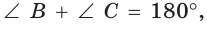 или и или и 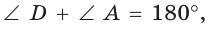 или и
- его противоположные стороны равны: и
- он имеет пару противоположных параллельных и равных сторон: и или и
- его противоположные углы равны: и
- его диагонали точкой пересечения делятся пополам:
Прямоугольник
Прямоугольник — параллелограмм, у которого имеется прямой угол (рис. 417).
Свойства прямоугольника
- все его углы равны друг другу и прямые:
- его диагонали равны:
- серединные перпендикуляры к его сторонам являются осями симметрии;
- его площадь равна произведению смежных сторон:
Признаки прямоугольника. Параллелограмм является прямоугольником, если:
- его диагонали равны:
- серединный перпендикуляр к какой-нибудь стороне параллелограмма является его осью симметрии; — ось симметрии или — ось симметрии.
Ромб
Ромб — параллелограмм, у которого имеется равные смежные стороны (рис. 419).

Свойства ромба (рис. 420):
- все его стороны равны друг другу:
- его диагонали перпендикулярны:
- его диагонали делят углы пополам: и
- прямые, которым принадлежат его диагонали, являются осями симметрии;
- его площадь равна половине произведения диагоналей:
Признаки ромба. Параллелограмм является ромбом, если: • он имеет пару равных смежных сторон:
или или или 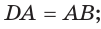
его диагонали перпендикулярны:
его диагонали делят углы пополам:
и
- прямые, которым принадлежат его диагонали, являются осями симметрии.
Квадрат
Квадрат — прямоугольник, у которого имеются равные смежные стороны, или ромб, у которого имеется прямой угол (рис. 421).
Поскольку квадрат является и прямоугольником и ромбом, то он обладает всеми свойствами прямоугольника и всеми свойствами ромба.
Окружность и четырёхугольник
Свойство описанного четырёхугольник а (рис. 422): суммы противоположных сторон равны.
Признак описанного четырёхугольника. Четырёхугольник является описанным около окружности, если у него равны суммы противоположных сторон.
Свойство вписанного четырёхугольника (рис. 423):
а) сумма противоположных углов равна 180°:
б) произведение диагоналей равно сумме произведений противоположных сторон:
Признаки вписанного четырёхугольника. Четырёхугольник является вписанным в окружность, если:
а) сумма противоположных углов равна 180°:

б) углы, каждый из которых образован стороной и диагональю и которые опираются на одну сторону, равны:
или или или
Обозначения геометрических фигур, геометрических величин, соотношений между ними и операций над фигурами
 — геометрическая фигура; — пустое множество;
— геометрическая фигура; — пустое множество;- — точки пространства;
- — прямые пространства;
- — окружность с центром в точке
 и радиусом
и радиусом - — прямая, проходящая через точки и

- — луч с началом в точке
 , проходящий через точку
, проходящий через точку - — отрезок с концами в точках
 и
и 
- — плоскость, проходящая через точки

- — плоскости пространства;
- — величина плоского угла;
- — угол с вершиной в точке
- — треугольник
- 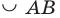 — дуга
- — расстояние от точки до точки длина отрезка
- — расстояние от точки
 до прямой
до прямой - — расстояние от точки
 до плоскости
до плоскости - — расстояние между прямыми и
- — расстояние между плоскостями и
- ° — градус;
- ' — минута;
- " — секунда
- — бесконечность;
- — периметр четырёхугольника

- — полупериметр треугольника
- — площадь треугольника
- — площадь боковой поверхности фигуры;
- — площадь полной поверхности фигуры;
- — точка совпадает с точкой 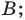
 — прямая совпадает с прямой
— прямая совпадает с прямой - 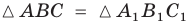 — треугольник равен треугольнику
- — расстояние от точки до точки 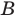 равно расстоянию от точки до точки
- — плоскости и пересекаются по прямой
- — прямые и не пересекаются;
- — треугольник подобен треугольнику
- — прямая параллельна прямой
- — прямая не параллельна прямой
- — плоскость
 параллельна прямой
параллельна прямой - — плоскость параллельна плоскости
- — прямая перпендикулярна прямой
- — прямая не перпендикулярна прямой

- — плоскость перпендикулярна прямой

 — плоскость перпендикулярна плоскости
— плоскость перпендикулярна плоскости - — прямая скрещивается с прямой
- 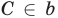 — точка
 принадлежит прямой
принадлежит прямой - — точка
 не принадлежит прямой
не принадлежит прямой - — точка принадлежит плоскости
- — прямая лежит в плоскости

- — прямая не лежит в плоскости
- — треугольник лежит в плоскости
- — проекция прямой на плоскость
- — пересечение (общая часть) фигур и
- — объединение фигур и